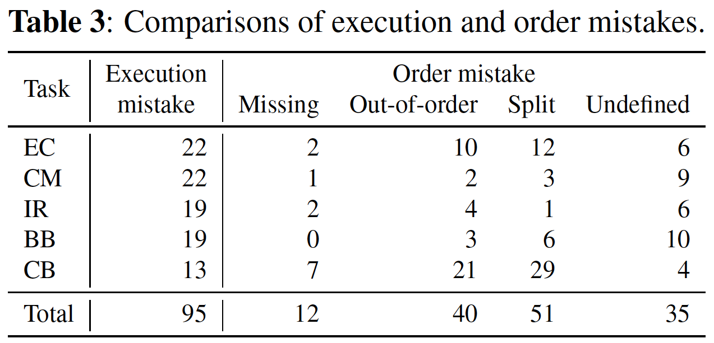
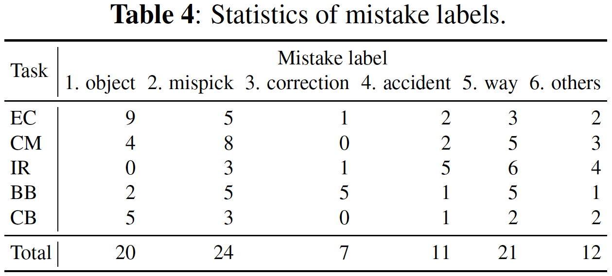

Statistics




Mistake action detection from egocentric videos is crucial for developing intelligent archives that detect workers' errors and provide feedback. Previous studies have been limited to specific domains, focused on detecting mistakes from videos without procedural texts, and analyzed whether actions are mistakes. To address these limitations, in this paper, we propose the EgoOops dataset, which includes egocentric videos, procedural texts, and three types of annotations: video-text alignment, mistake labels, and descriptions for mistakes. EgoOops covers five procedural domains and includes 50 egocentric videos. The video-text alignment allows the model to detect mistakes based on both videos and procedural texts. The mistake labels and descriptions enable detailed analysis of real-world mistakes. Based on EgoOops, we tackle two tasks: video-text alignment and mistake detection. For video-text alignment, we enhance the recent StepFormer model with an additional loss for fine-tuning. Based on the alignment results, we propose a multi-modal classifier to predict mistake labels. In our experiments, the proposed methods achieve higher performance than the baselines. In addition, our ablation study demonstrates the effectiveness of combining videos and texts. We will release the dataset and codes upon publication.
Under construction.
The GitHub repository (annotations)
The laboratory's website (videos (720p, RGB) & annotations)
EgoOops by Yuto Haneji is licensed under CC BY-SA 4.0


@misc{haneji2024egooops,
title={EgoOops: A Dataset for Mistake Action Detection from Egocentric Videos with Procedural Texts},
author={Haneji, Yuto and Nishimura, Taichi and Kameko, Hirotaka and Yoshida, Tomoya and Shirai, Keisuke and Kajimura, Keiya and Yamamoto, Koki and Cui, Taiyu and Nishimoto, Tomohiro and Mori, Shinsuke},
year={2024},
eprint={TBW},
archivePrefix={arXiv},
primaryClass={cs.CV}
}